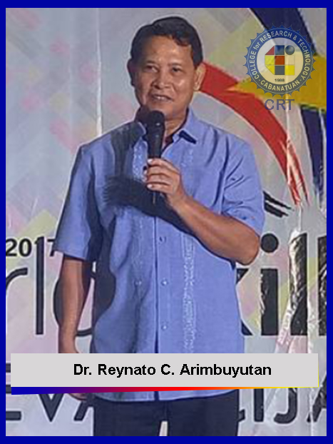

THE PRESIDENT

His extensive exposure to the world of the academe, government and business serves him well in his job of running the University
He had been administrator of the Bulacan Ecumenical School in Malolos City since 2007, member of the Board of Regents of Bulacan Agricultural State College in San Ildefonso, Bulacan since 2010, member of the Board of Directors of Bulacan Polytechnic College from 2007 to 2010, a court-appointed receiver for Philippine Christian University in 2009, and member of the Board of Trustees of Mary Johnston Hospital in Tondo, Manila.
He served in the Board of Trustees (BOT) under two administrations, and was the Board Chair when appointed as Officer-in-Charge of the Office of the President in June 2011 before being elected as President the following year.
In government, Aniag served as chairman of Barangay Atlag, Malolos City from 1982 to 1986, Sangguniang Bayan member of Malolos from 1986 to 1988, and member of the Bulacan Sangguniang Panlalawigan from 1998 to 2007.
Aniag is deeply involved in trade and cooperative concerns, being an entrepreneur himself as vice president and general manger of Enrian Development Corp. engaged in aquaculture and printing press operation, and C & K Handicrafts whose specialty is papier mache packaging products, He is a director of the Bulacan Chamber of Commerce and Industry, founder and president of the Bulacan United Methodist Multi-Purpose Cooperative that started in 1991 with a capital of only P32,000 but now worth P18 million in resources, and member of the Bulacan Federation of Aquacuturists.
In the United Methodist Church (UMC), Aniag, a lay leader, is a member of the General Council on Finance and Administration of the UMC based in Nashville, Tennessee, U.S.A. – the governing body of the Church worldwide. He is also a member of the Board of Directors of the United Methodist Church Foundation, the holding corporation of about $7 billion in assets held in trust by the UMC, and member of the General Commission on Archives and History of the United Methodist Church based in Dayton, Ohio, U.S.A.
In the civic front, Aniag was president of the Malolos Jaycees in 1979. In the Rotary movement, he was the District Governor of Rotary International District 3770 in 1992, a delegate to the Rotary Council on Legislation in 2001, president of the Rotary Club of Malolos in 1986 and team leader of the Rotary Group Study Exchange Team to England in 1989. A member of Freemasonry, he was the Grand Master of all Freemasons in the jurisdiction of the Philippines, Guam and Okinawa from 2008 to 2009.